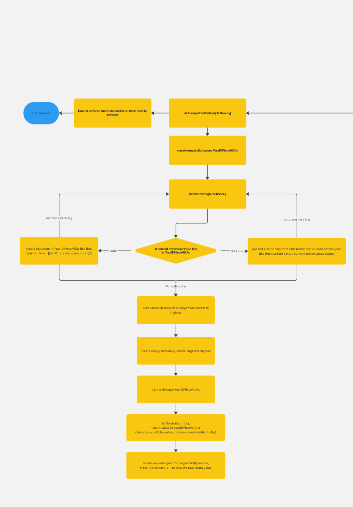
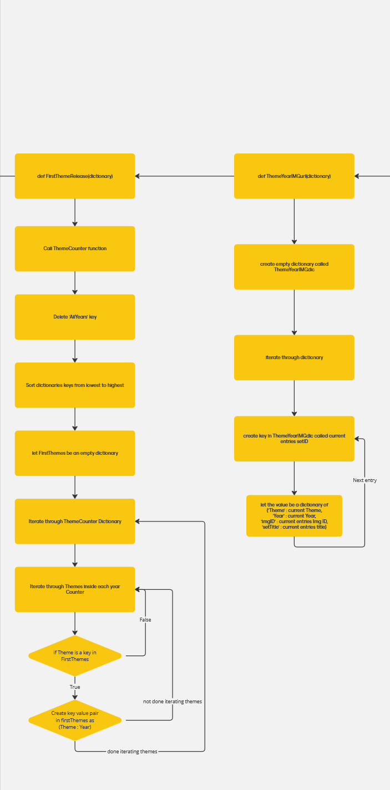
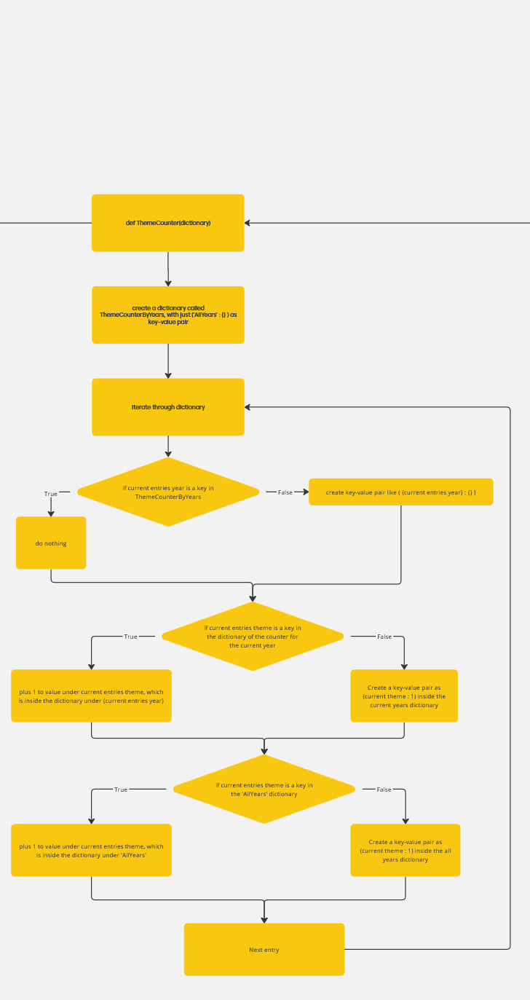
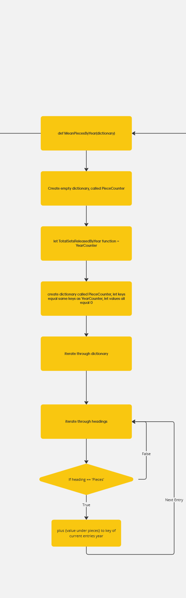
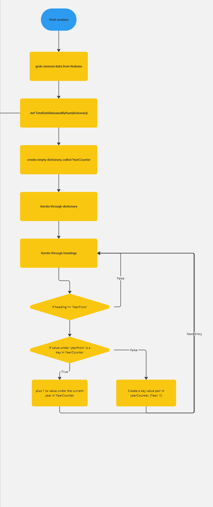

Investigation
My first idea was a medical dataset, as it is an area that is important to society, but nothing caught my interest. Then I came across a dataset on FBI firearm background checks and firearm sales, I decided against using this as it was hard to decide what data could be graphed from it. I then decided to research if datasets existed on Lego. the first dataset I found with Lego had most of the Lego sets but only up to 2022. This dataset did contain a heading with a URL link of an image of each Lego set. I knew that I should consider using this dataset as the image of each Lego set caught my interest and I knew I would want to use it in the website. After further research, I managed to find a completely up to date dataset from the very first Lego set in 1949 up until known Lego sets that were to release in early 2025. This dataset is from brickset.com. [1].
This new dataset contained many headings along with 'Image Filename' which after investigating could be shown if the image filename was surrounded with the URL that the dataset was hosted from. For example, an image filename was '700-12', which could then be turned into, 'https://images.brickset.com/sets/images/700-12.jpg'.
Lego has been very meaningful to me while growing up so this dataset is definitely an area of my interests. For my interactive information system, I want to analyse the number of pieces in Lego sets, is the average number of pieces increasing? Are Lego Sets getting larger? I also want to know how has Lego expanded their collection of themes as when I would have owned Legos they seemed to have less themes then what's available now.
While researching existing websites provided by the brief, I came across features I would like to replicate if possible, such as one where a specific date was to be inputted by the user and all sorts of information would be displayed of what occurred on that date. [2]. I also found inspiration from Brickset [3] where they displayed a list of Lego Sets with the most amount of pieces, I would definitely want to replicate this in some way.
I am happy that this dataset will allow me to meet both the basic and advanced requirements of the brief and create an information system for all fans of Lego from teens to adults
Plan and design
I decided to go with the Lego dataset as it aligns with my interests and will allow me to make a useful information system from teen to adult Lego Fans.
For the development of my website, I will use the AGILE software development method as I find it is best suited to my way of working.
My information system will meet both the basic and advanced requirements. I will use Thonny and python with matplotlib to clean and analyse my raw data and to produce the basic graphs. I will store this data on Firebase which will be my database for my project.
I plan to use VSCode with live server extension to run my website. I will use HTML/CSS and JavaScript for creating my website and ChartJS for the interactive graphs. For the form on the website I do plan to use multiple data types, such as boolean, string and integer, and store them on my Firebase database under its own folder.
My graphs will be of the total number of Lego sets by year, the average number of pieces in a Lego set per year and the frequency of every Lego set theme. A basic form of each graph will be displayed from my python analysis and an interactive version will be on the webpage including the images as mentioned in the investigation. I would like some sort of feature where the user can choose to see a Lego Set with some sort of specificity.
I will have a recommendation section at the bottom of the main page to provide additional information to the user and also a form on a different page with surveys users about their own thoughts on LEGO. This data for all users will be summarised in a number of graphs on the survey page. Implementing these options will allow me to meet the basic and advanced requirements.
I intend to use OBS Studio and KDenLive to record and edit my video
While I don't believe there are any ethical problems with my main page, I will be careful to handle user data submitted through the survey such that it doesn't disclose any personal details of users.
The design for my website will incorporate features of universal design such as tolerance for error and perceptible information, I intend to use the LEGO colour scheme throughout the website
Below is an Architecture Diagram which shows an overview how my system ties together, followed by flowcharts of my python code and wireframes of my intended layout for my interactive information system.

Extracting/Cleaning Flowcharts

Analysis Flowcharts





Wireframe for main website

Wireframe for survey

Create
Weekly Progress Log
- Week 1, Investigating existing information systems and investigating FBI background checks dataset
- Week 2, Chose dataset on Lego's, began extracting data from file
- Week 3, Began attempting to send data to firebase
- Week 4, analysis.py created, takes cleaned data from firebase, Total Year counter data completed, matplotlib being used to show the total sets released by year
- Week 5, Mean piece counter function complete, shows in matplotlib, both graphs data sends to firebase
- Week 6, Cleaning file changes, function made to delete any entry with a given value under given heading, function made to delete any entry with a given keyword throughout the values under any heading. Used pictures of entries to figure out what themes and categories needed to be cleaned
- Week 7, HTML began, Using firebase and JavaScript graph data was obtained and static bar graphs display on website. 2 Range sliders under both bar graphs to make year range interactive, along with an 'Update' button that sends the range to the chart and updates the chart based on filtered range
- Week 8, Created function in analysis.py that gets Theme Frequency Data, shows in matplotlib and sends to firebase. JavaScript grabs analysed data and displays static pie chart, It was quite difficult to sort the keys and values on JavaScript as Firebase auto sorts data alphabetically, the pie charts data had to be sorted from highest frequent theme to least to be readable and understandable
- Week 9, To make pie graph interactable I decided to redo the python function that grabs the data, I remade it to sort the theme frequency counter into each year of data that was present, and then another folder labelled 'All years' which was the original total theme frequency. I created a number input for the user to input a year, which then calls a new function that grabs the data for that inputted year, sorts the data from highest frequency to least, and updates the chart. If the user inputted an invalid year, a message would pop-up and tell the user.
- Week 10, Started working on a form for the user to complete, based on their experience with Lego. Began pushing this data to firebase, made a function that iterates through all submissions of the form and pushes them all into a collective list to make it simpler to view results and show graphs of the results. Created a function that takes the list of answers, and then creates a dictionary of a frequency counter of the list.
- Week 11, I created a function inside analysis.py that sends necessary data to firebase for viewing pictures of each entry, it sends the image URL, release year, piece count, theme, and set name all under the unique ID of that set. The data is called from JavaScript when an element of the pie chart is clicked.
- Week 12, Started recording how my artefact works for the video. wrote an evaluation on my project
Test Table for Theme Frequency Chart, Year input
| Test Input |
Expected Result |
Actual Result |
Pass |
| 1999 |
Filter Chart to 1999 |
Filter Chart to 1999 |
Yes |
| 1940 |
'OutsideRangeError' message |
Out of Range Error message |
Yes |
| 1952 |
'invalidYearInput' message |
'invalidYearInput' message |
Yes |
| 2025 |
Filter Chart to 2025 |
Filter Chart to 2025 |
Yes |
| 2026 |
'OutsideRangeError' message |
'OutsideRangeError'message |
Yes |
Conclusion: Pass
Test Table for Survey, Favourite Theme input
| Test Input |
Expected Result |
Actual Result |
Pass |
| Ninjago |
Form Valid |
Form Valid |
Yes |
| Star Wars |
Form Valid |
Form Valid |
Yes |
| starwars |
Form Not Valid |
Form Not Valid |
Yes |
| Star_Wars |
Form Not Valid |
Form Not Valid |
Yes |
Conclusion: Pass
The test tables I have created on these inputs have passed, this tells me I have correctly created input validators for my artefact.
Problem I encountered
I encountered a problem while making the bar charts interactive on the website. While creating the dual range slider, because it is 2 range sliders that sit on top of each other to allow the user to input a start and end year for the year range, the sliders thumbs could overlap and go beyond each other. This would create errors in the chart as a range could not work if the lower value was higher than the upper value.
To solve this, I created a function for each slider when either sliders thumb is moved, It checks if the difference between the upper and lower values is less than or equal to one. This condition is used for both functions because if the difference between them was less than or equal to one, it means they are about overlap.
- When adjusting the lower value, if they are about to overlap, the function keeps the lower value at upper value - 1.
- When adjusting the upper value, if they are about to overlap, the function keeps the upper value at lower value + 1.
This ensures the values cannot overlap each other and can no longer cause errors for the chart.
Algorithm
I will explain the algorithm I created for extracting the data from the raw CSV and storing it inside a dictionary.
Here is the pseudocode for this algorithm and the real code
Open 'Brickset-allsets.csv' file
Header = FirstLineOfFile
Split Header into a list
Strip values of HeaderList
Create empty mainDictionary
For line in 'Brickset-allsets.csv':
if line blank:
skip line
Split Line into a list
Strip values of LineList
Create an empty innerDictionary
for each index in LineList:
the innerdictionary key is equal to the headerlist value at this index
the innerdictionary value is equal to the line list value at this index
the mainDictionary key is equal to the first index of lineList
the mainDictionary Value is equal to the innerDictionary

The first step for the algorithm I made to extract the data from the CSV is to open the file in read mode, I use the built-in file.readline() function to read the first line of the file to a header, I then strip '\n\' from the header and split header into a list to have a value for each heading of each column, I strip ' “ ' from each value in header using list comprehension to have clean values of each heading. I create an empty dictionary and start iterating through the file, if not line.strip() is used as str.strip() on a blank string returns nothing, the not keyword can be added in front of this statement to flip the value as if it was boolean. not str.strip() returns True for a blank string, if a line is blank the entry is skipped using the break keyword. I use line.split('“') as the values in the csv are surrounded with double quotes and then separated with commas, as commas are present in values without separating the values. I then use list comprehension to strip any remaining double quotes and '\n' from the values. I create an empty dictionary inside the loop to store the data for each entry, which will be added to the main dictionary. Now iterate over the indices of the line using a for loop with range(len(line)),and create a key-value pair for each value by mapping a column header to its corresponding value to go in the inner dictionary. Finally create another key-value pair by mapping each entries set ID, which is a unique ID, to the inner dictionary, which contains all of the data for that entry.
Evaluation
To reflect on my artefact, I feel satisfied with how I have achieved the basic & advanced requirements outlined in the brief, and how I have proven that I have with the video. I feel that I have achieved these requirements to the best of my ability, and I am confident that my system is user friendly because of testing and adherence to universal design principles.
The visual design is another aspect I am proud of, especially the creativity with the colour scheme of my website matching the dataset my artefact was on. I am also pleased with how I chose to visualise my analysed data, I feel that the graphs were informative and visually pleasing.
I also feel satisfied with the tidiness and organisation of data stored in my firebase database, this early focus on storing the data allowed the rest of the project to progress more smoothly, as it ensured easy access to my data and gave confidence during debugging knowing my data in firebase was well-organized.
If I had more time, I would have created a graph that displayed the largest Lego sets by piece count, hovering over these elements of the graph would allow the user to see all sorts of information and a picture of the Lego set, this feature would have been another more engaging interactive aspect to my artefact. I would have liked to allow the user to search for Lego sets, to be able to filter by theme, year released or choose a range of number of pieces, and even use a search bar, I could utilise how JavaScript can populate a datalist from firebase data, as the user types the dropdown search input would show the user everything they are searching for.
References
[1] Download link to CSV https://brickset.com/exportscripts/sets/all
[2] https://www2.hse.ie/services/urgent-emergency-care-report/
[3] https://brickset.com/
Summary word count
| Section |
Word Count |
| 1. Meeting the brief |
0 |
| 2. Investigation |
407 |
| 3. Plan and design |
425 |
| 4. Create |
1052 |
| 5. Evaluation |
291 |
| Total |
2175 |